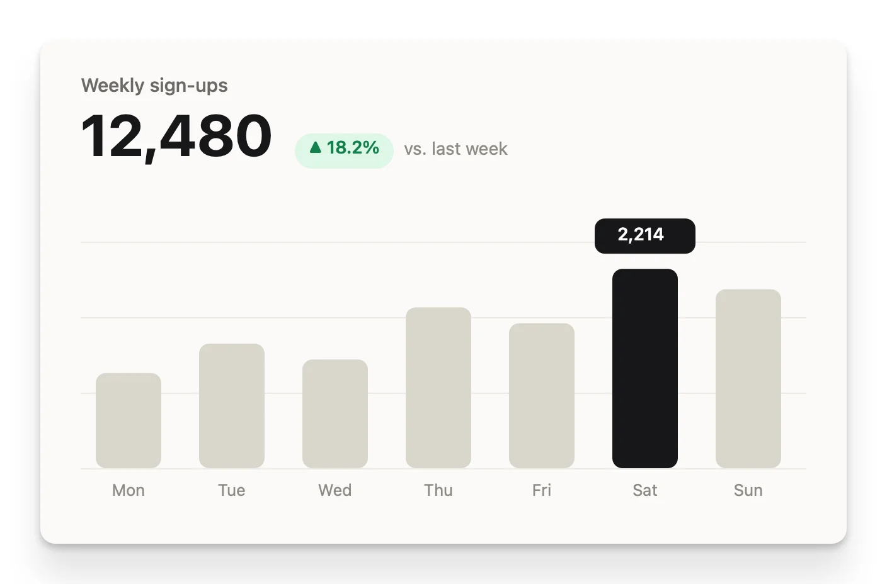

A little light for your screenshots
Capture it.
Make it glint.
The screenshot is just the beginning. Give it a background, a little breathing room, and something worth sharing. Free and open source. Made for your Mac.
brew install --cask MrAshRhodes/tap/glint

Small details.
Big difference.
For the bug report that needs context, the launch post that needs polish, and the tutorial that needs one very good arrow.
Start with exactly what you need.
Grab an area, a window or your screen. Repeat the last area, set a 3, 5 or 10 second timer, or open an existing image. Global shortcuts keep capture close at hand.
- Retina aware
- Multiple displays
- OCR to clipboard
Your images stay yours.
Rendering and text recognition run on your Mac. No account, no image uploads, no cloud processing.
Set the scene.
Choose from 32 built-in backgrounds or bring your own image. Dial in padding, inset, corner radius and shadow.
Get the framing right.
Balance empty margins, choose an aspect ratio, add a window frame, or give your capture a little perspective.
Make your point.
Arrows, shapes, pen strokes, highlighter, text and numbered steps. Style each object, arrange layers, and undo your last move.
Leave private details out.
Blur, pixelate or cover a region. Optional on-device detection helps find sensitive text. Always inspect the result before sharing.
Find your signature look.
Save a preset, make it the default, and apply the same treatment to your next capture. Less fiddling. More consistency.
Ready for wherever it goes.
Export PNG, JPEG, HEIC or TIFF at 1× or 2×. Copy, save, share, or drag an image out of the editor.


A good look.
On repeat.
Keep the original. Make the finished image your own. Presets turn a handful of adjustments into a repeatable style.
Meet your four starting presetsLess clicking.
More capturing.
Defaults use Control + Option + Command. Rebind them in Preferences to fit your muscle memory.
| Capture area → editor | ⌃⌥⌘ 4 |
|---|---|
| Capture area → clipboard | ⌃⌥⌘ 5 |
| Capture window | ⌃⌥⌘ 6 |
| Capture full screen | ⌃⌥⌘ 3 |
| Capture text (OCR) | ⌃⌥⌘ 7 |
| Repeat last area | ⌃⌥⌘ R |
Yours in
a few moments.
macOS 14 or newer. One universal build for Apple silicon and Intel. No subscription and no account to create.
1 Pick your install
Use Homebrew:
brew install --cask MrAshRhodes/tap/glintOr download the latest release, unzip it and move Glint.app to Applications.
2 Allow screen capture
Open Glint. Grant Screen Recording access in System Settings → Privacy & Security when prompted, then relaunch if macOS asks.
You can style existing images without capturing your screen.
3 Make your first image
Choose Capture Area from the menu bar. Select a region, choose a preset in the editor, then copy or save the result.
A note before installing. Current releases are ad-hoc signed, not Apple-notarized. macOS may block a manually downloaded app. Review the source and release before deciding to install; see installation details.
Updates are manual. Glint does not install updates in the background. With Homebrew, quit Glint, run brew update && brew upgrade --cask glint, then reopen it. brew update alone does not upgrade the app. For a direct download, use Check for Updates… in Glint and replace the app with the new release. Update guide →
A little less manual.
A little more magic.
Trigger a capture from another app, or render an image from a script. Use the same presets as the editor.
A URL for the shortcut crowd
# Trigger Glint from Terminal or an automation
open 'glint://capture-area'
open 'glint://capture-text'
open 'glint://preset?name=Clean'A command for the terminal crowd
# Render an existing image at 2×
/Applications/Glint.app/Contents/MacOS/Glint \
--render input.png output.png \
--preset "Social 16:9" --scale 2A few answers.
Is it really free?
Yes. Glint is open source under the MIT license. Download a release, build it yourself, or contribute on GitHub.
Does anything leave my Mac?
Your screenshots are processed locally and are not uploaded by Glint. Manually choosing Check for Updates contacts GitHub to check the latest release. Sharing and opening links use the apps and destinations you choose.
Will it update itself?
No. Check for Updates tells you about a newer release, but does not install it. Homebrew users should quit Glint and run brew update && brew upgrade --cask glint. Download users replace Glint.app with the new release. Full update instructions.
Can I trust automatic redaction?
Treat it as a helpful first pass, not a guarantee. Detection can miss sensitive information. Review every image and add manual redactions before sharing. Exported redactions replace the affected pixels, but an untouched raw copy may still exist if you keep capture history.
Is Glint affiliated with another screenshot app?
No. Glint is an independent project with its own identity. The sample images on this page are original artwork, rendered using Glint.
Where do I report a problem?
Open an issue on GitHub with your macOS version, Glint version and steps to reproduce. Please remove private information from screenshots and diagnostic output first.